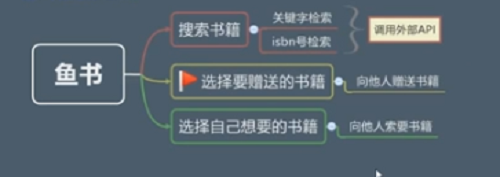
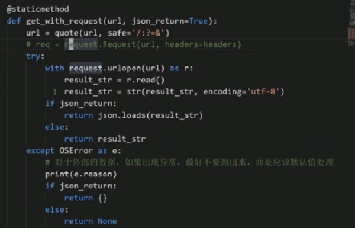
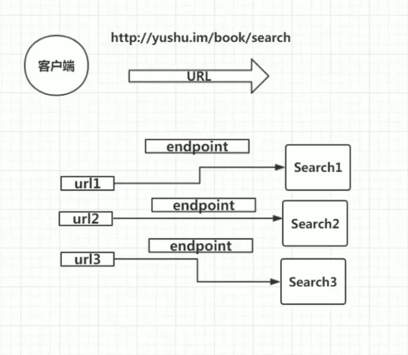
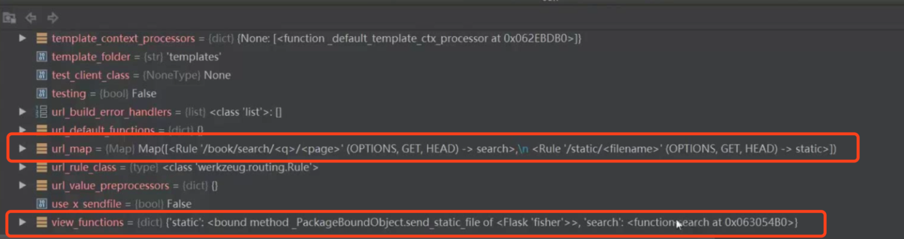
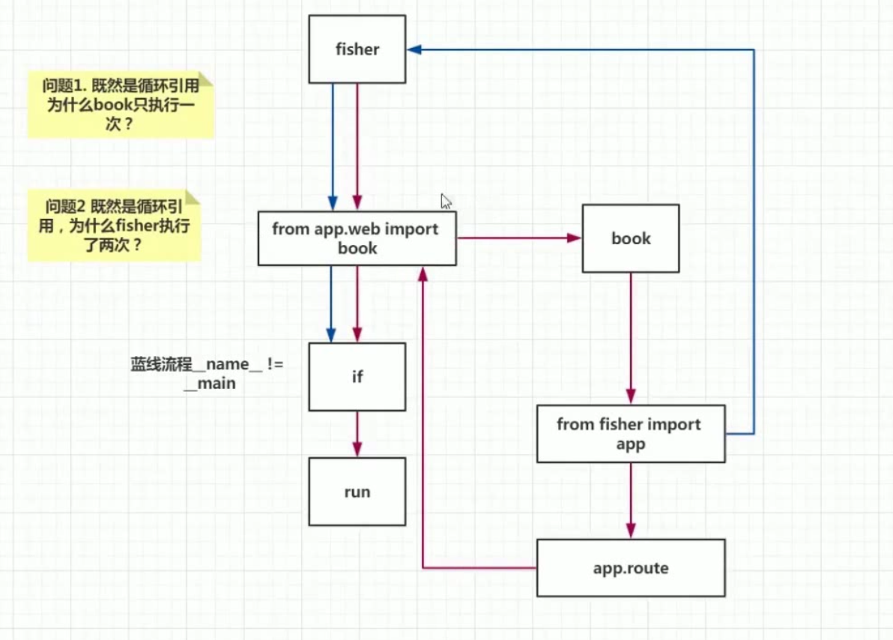

Flask 学习笔记|02 数据和路由
2.数据和路由
鱼书项目中的图书数据并不是使用自己构建的数据库的，构建这么多的图书数据需要花费很大的力气。当然可以通过数据爬取的方式来构建，但是这和课程的核心内容就有点冲突了。课程中使用调用web api的方式获取数据，下面的api中其中yushu的api都是课程老师七月构建的，个人觉得这个大概率是使用爬虫的方式在网上获取到的大量的数据。
不管使用哪个API, 能获取到数据就行！
# 基地址
http://t.yushu.im
# 关键字搜索
http://t.yushu.im/v2/book/search?q={}&start={}&count={}
# isbn搜索
http://t.yushu.im/v2/book/search/isbn/{isbn}
# 豆瓣api
https://api.douban.com/v2/book

2.1 定义参数，判断查询参数q是否是isbn号
@app.route("/search/<q>/<page>")
def search(q,page):
"""
搜索书籍路由
:param q: 关键字 OR isbn
:param page: 页码
"""
# isbn isbn13 由13个0-9在数字组成
# isbn10 由10表0-9表数字组组成，中间可能包含' - '
isbn_or_key = 'key'
if len(q) == 13 and q.isdigit():
isbn_or_key = 'isbn'
short_q = q.replace('-', '')
if '-' in q and len(short_q) == 10 and short_q.isdigit():
isbn_or_key = 'isbn'
pass
知识点：
- 字符串有一个函数
isdigit()可以判断是否为数字 - in 关键字可以判断一个字符串是否在另一个字符串内
- 多个逻辑判断排列原则：1.大部分判断结果为假的条件应该放在前面；2.需要查询数据库的操作由于会消耗资源，应该尽量靠后。 这个原则在其他的场合也是一样！
2.2 简单的重构
将上一小节的判断语句全都写到search函数中的几个缺点： 1.使得代码非常的臃肿，现在只有两个判断就占用了6行，如果有多个判断，search方法就要爆炸了 2.如果有其他地方的代码也要进行这个判断，那么就需要再重新写一遍，同样的代码重现在了两个地方 3.代码可读性查，作为一个路由函数，代码阅读者很难一眼看出路由函数的主要功能。
重构后的代码 fisher.py
@app.route("/search/<q>/<page>")
def search(q, page):
"""
搜索书籍路由
:param q: 关键字 OR isbn
:param page: 页码
"""
isbn_or_key = is_isbn_or_key(q)
helper.py
def is_isbn_or_key(word):
"""
判断word是isbn号还是查询关键字key
isbn isbn13 由13个0-9在数字组成
isbn10 由10表0-9表数字组组成，中间可能包含' - '
:param word:
:return: key or isbn
"""
isbn_or_key = 'key'
if len(word) == 13 and word.isdigit():
isbn_or_key = 'isbn'
short_word = word.replace('-', '')
if '-' in word and len(short_word) == 10 and short_word.isdigit():
isbn_or_key = 'isbn'
return isbn_or_key
知识点：
- 其他地方的代码多一点还可以接受，视图函数中不可以，因为视图函数是一个web项目的入口。所有人阅读都是从这里入手，应该把细节屏蔽掉，给阅读者一个选择。
- 看源码的技巧：先通读整体，了解整体过程，再回过头来了解细节，不要从一开始就深究每一个细节
- 过多的注释会让代码变的臃肿，尽量使用易懂的函数名来代替注释，保持代码的简洁性
2.3 requests发送http请求及代码的简化手段
http.py
class HTTP:
def get(self, url, return_json=True):
"""
发送get请求
:param url: 请求路径
:param return_json: 是否返回json格式的结果
:return:
"""
# r 是对这次HTTP请求调用结果的一个封装，并不是我们直接想要的结果，而是想要返回的内容
r = requests.get(url)
if r.status_code != 200:
return {} if return_json else ''
return r.json() if return_json else r.text
知识点：
- 简化if-else语句的几种方式 1.使用三元表达式 ；2.if+return；3.将if-else里的代码提取成函数
- if+return的理解：把最后一句return前的if+return 全都理解为正常流程之外的一种特例情况的处理；多次if-return，提前结束一些逻辑分支，可以提高代码思维的清晰性
- requests的一些说明：1.get()发送get请求；2.返回结果r.status_code 获取返回状态吗；3.r.json()将返回结果序列化成json;4.r.text 将返回结果不做处理直接返回
2.4 requests vs. urllib
发送http请求的两种方法：
- 使用urllib(python内置)
- 使用requests, 并不是内置的，需要自行安装
urllib的用法：  urlib的一些缺点：
- 需要对url进行编码，并且有些字符不需要编码还要声明出来
- 返回的结果是字节码，需要包装成字符串
- 404的情况是通过异常的形式抛出，现在流行的restful，404已经不是一种异常了
2.5 从API获取数据
将具体调用HTTP请求，获取结果的业务代码封装到YuShuBook中
class YuShuBook:
search_by_isbn_url = "http://t.yushu.im/v2/book/search/isbn/{}"
search_by_key_url = "http://t.yushu.im/v2/book/search?q={}&count={}&start={}"
@classmethod
def search_by_isbn(cls, isbn):
url = cls.search_by_isbn_url.format(isbn)
return HTTP.get(url)
@classmethod
def search_by_key(cls, q, count=15, start=0):
url = cls.search_by_key_url.format(q, count, start)
return HTTP.get(url)
使用json.dumps 序列表返回结果，在视图函数中进行返回，并声明状态码和返回类型(一个元组)
@app.route("/book/search/<q>/<page>")
def search(q, page):
"""
搜索书籍路由
:param q: 关键字 OR isbn
:param page: 页码
"""
isbn_or_key = is_isbn_or_key(q)
if isbn_or_key == 'isbn':
result = YuShuBook.search_by_isbn(q)
else:
result = YuShuBook.search_by_key(q)
return json.dumps(result), 200, {'content-type': 'application/json'}
可以使用flask提供的jsonify替换麻烦的json.dumps和元组
return jsonify(result)
2.6 将视图函数拆分到单独模块中
1.所有视图函数放在一个文件中的问题
- 代码太长，不利于维护
- 从业务模型抽象的角度，不应该把他们都放在一个文件中。关于书籍相关的API就应该放在书籍模型的视图函数文件中，跟用户相关的API就应该放在用户模型相关的文件中
- 入口文件的意义比较独特，会启动web服务器以及做很多初始化的操作，就算要放在一个文件也不应该业务的操作放在入口文件中来
2.尝试拆分模块
思路，将视图函数抽离到单独的包中，然后在新的视图文件中引入flask.py来导入app核心对象。为了新的视图文件中的路由可以成功注册，再在flask.py中引入刚刚抽离出的视图模块
修改后的fisher.py
from flask import Flask
# 为了可以注册book.py中的路由
from app.web import book
app = Flask(__name__)
app.config.from_object("config")
if __name__ == "__main__":
app.run(host=app.config["HOST"], debug=app.config["DEBUG"], port=app.config["PORT"])
新增的book.py
from flask import jsonify
from helper import is_isbn_or_key
from yushu_book import YuShuBook
# 为了让book.py模块可以使用app对象
from fisher import app
__author__ = "gaowenfeng"
@app.route("/book/search/<q>/<page>")
def search(q, page):
"""
搜索书籍路由
:param q: 关键字 OR isbn
:param page: 页码
"""
isbn_or_key = is_isbn_or_key(q)
if isbn_or_key == 'isbn':
result = YuShuBook.search_by_isbn(q)
else:
result = YuShuBook.search_by_key(q)
return jsonify(result)
但是这样做并不是正确的做法，结果表明，这样修改以后，访问search api会404
为了知道为什么这样做不行，我们需要先剖析一下Flask路由机制的原理
3.Flask路由机制
 flask的基本思想是内部会维护一个字典。每一个url都会对应一个视图函数，但是不仅仅是这样。每一个url还会对应一个endpoint端点。用于反向构建URL（后面会讲解)
flask的路由注册app_url_rule(url=,view_func=,endpoint=)会接受三个参数，前两个我们都知道了，第三个就是上面说的endpoint。他的默认值是view_func的名称。当然，app.route('url',endpoint=)也可以传入
flask route的部分源码
# 注册路由的装饰器
def route(self, rule, **options):
def decorator(f):
endpoint = options.pop('endpoint', None)
# 装饰器内部也是调用了add_url_rule
self.add_url_rule(rule, endpoint, f, **options)
return f
return decorator
# 注册路由
@setupmethod
def add_url_rule(self, rule, endpoint=None, view_func=None,
provide_automatic_options=None, **options):
# 如果endpoint传入的None，则使用视图函数名作为endpoint
if endpoint is None:
endpoint = _endpoint_from_view_func(view_func)
options['endpoint'] = endpoint
methods = options.pop('methods', None)
# 默认的method是GET请求
if methods is None:
methods = getattr(view_func, 'methods', None) or ('GET',)
if isinstance(methods, string_types):
raise TypeError('Allowed methods have to be iterables of strings, '
'for example: @app.route(..., methods=["POST"])')
methods = set(item.upper() for item in methods)
...
...
...
rule = self.url_rule_class(rule, methods=methods, **options)
rule.provide_automatic_options = provide_automatic_options
# 将url->endpoint 的规则维护到url_map
self.url_map.add(rule)
if view_func is not None:
old_func = self.view_functions.get(endpoint)
if old_func is not None and old_func != view_func:
raise AssertionError('View function mapping is overwriting an '
'existing endpoint function: %s' % endpoint)
# 记录endpoint 所指向的view_func
self.view_functions[endpoint] = view_func

通过端点调试可以发现，Flask内部由url_map 维护一个url->endpoint 的指向。由view_functions 记录 endpoint所指向视图函数的函数，这样请求进入到Flask内部，才能通过Url找到对应的视图函数
4. 循环引入流程分析
从上面的断点调试中发现，我们的url_maph和view_functions中都已经维护了相关的信息。但是为什么还是会出现404的情况，这是因为fisher.py和book.py出现了循环引入的情况。
下面看下fisher.py和book.py的具体流程图 
图中有两种颜色的线：红色的线是fisher主执行文件被执行之后的执行路径；蓝色的线是book模块被导入之后循环导入的执行路径。
- 主流程开始之后，首先到达导入book的语句。然后进入book模块中执行
- book模块开始之后，首先到达导入fisher的语句（循环导入），这个时候主流程暂时结束，重新执行fisher中的代码
- 这时候又回到fisher中的导入book的语句，由于book已经被导入一次，所以不会再次导入，进入if语句，这个时候的__name__是book导入fisher时候的name:fisher，不是主流程__main__，所以if语句条件为false。蓝色线执行终止，重新回到2. book导入fisher的语句。
- 继续向下执行book 中app.route注册路由的语句。然后book执行完，回到fisher主流程执行中。
- 到达if语句，这个时候__name__为main。执行run方法，启动服务
回答流程图中的两个问题： 问题1：因为都是由fisher引入book，一个模块只会引入另一个模块一次。所以只执行了一次book 问题2：由于一次是主流程执行fisher文件；一次是由book模块导入 fisher。
5.找不到视图函数的最终解释和证明
整个流程中，出现了两次核心app对象的初始化，注册路由是在蓝色流程中初始化的app注册的。但是启动服务是红色流程中的app启动的
book中注册路由所使用的app对象，是他自己所导入fisher模块的app对象（蓝色流程中），而不是红色主流程中所实例化的app对象
下面来加入一些日志出数验证我们的结论。我们在app实例化，启动，注册路由是哪个地方加入日志信息，来观察一下
book.py
print("id为"+str(id(app))+"的app注册路由")
@app.route("/book/search/<q>/<page>")
def search(q, page):
"""
搜索书籍路由
:param q: 关键字 OR isbn
:param page: 页码
"""
isbn_or_key = is_isbn_or_key(q)
if isbn_or_key == 'isbn':
result = YuShuBook.search_by_isbn(q)
else:
result = YuShuBook.search_by_key(q)
return jsonify(result)
fisher.py
app = Flask(__name__)
print("id为"+str(id(app))+"的app实例化")
app.config.from_object("config")
# 为了可以注册book.py中的路由
from app.web import book
if __name__ == "__main__":
print("id为" + str(id(app)) + "的app启动")
app.run(host=app.config["HOST"], debug=app.config["DEBUG"], port=app.config["PORT"])
执行结果
pydev debugger: process 63816 is connecting
id为4350444824的app实例化
id为4355159656的app实例化
id为4355159656的app注册路由
id为4350444824的app启动
* Debugger is active!
* Debugger PIN: 176-669-651
可以看到注册路由的app，和启动服务的app不是同一个app。并且最后启动的app是最先实例化的app，也就是红色主流程的app；而注册路由的app是后实例化的app，也就是由book导入fisher模块的蓝色流程的app
- 原文作者：Binean
- 原文链接：https://bzhou830.github.io/post/20160502flask02/
- 版权声明：本作品采用知识共享署名-非商业性使用-禁止演绎 4.0 国际许可协议进行许可，非商业转载请注明出处（作者，原文链接），商业转载请联系作者获得授权。